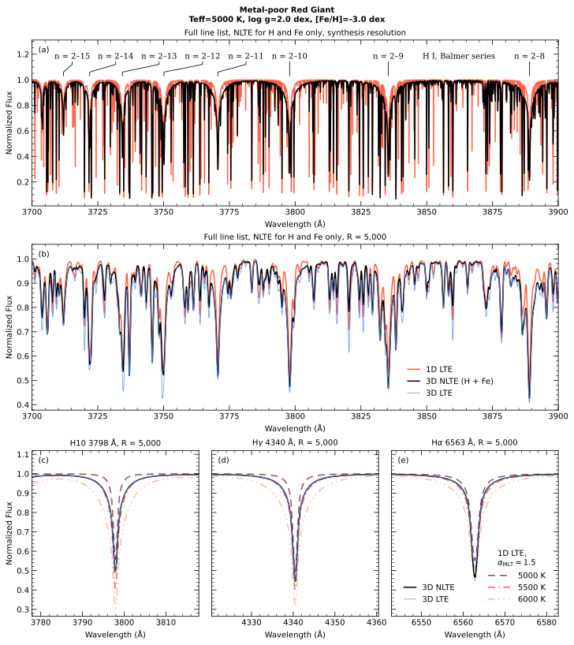

星の大気を三次元で扱う
これまでの解析では、大気を平均的な一枚の層として扱ったり、原子の状態が周囲の温度に応じて決まる「局所熱力学平衡（LTE）」を仮定したりして、計算を扱いやすくしてきた。実際の恒星表面には熱い上昇流と冷たい下降流があり、温度も密度も場所によって変わる。強い放射が原子の励起や電離に影響すれば、LTEからのずれも重要になる。こうした条件を三次元で計算することが、より精密な分光解析の課題となっている。
Hoppeらが公開した「OpenMULTI3D」は、そのためのスペクトル合成コードである。先行するMULTI3Dの考え方を発展させ、DISPATCHという計算基盤の上で三次元の放射輸送とnon-LTEの原子状態を扱う。A型からM型まで、幅広い恒星の大気モデルを対象としており、大量の高分散スペクトルが得られる時代を意識して開発された。
赤色巨星の水素の線で確かめる
コードの公開にあたり、著者らは計算結果を既存の手法による結果と突き合わせた。この比較を通じて、原子の励起状態がLTEからどれほどずれるか、元素組成の推定にどの程度差が出るか、計算されたエネルギー分布がどう見えるかなどを検証した。金属量の少ない赤色巨星について、水素のバルマー線を三次元non-LTEで合成した例も示している。


図を選ぶと原寸画像を開けます。
バルマー線は水素原子がつくる、おなじみのスペクトル線である。星の温度や大気構造の診断に使われる一方、その形は放射場や原子の状態にも左右される。同じ元素の線であっても、採用する大気モデルによって解釈に差が生まれる。その違いを自分で追試できる形で計算コードが提供される意味は大きい。
著者らはさらに、時間とともに変化する大気からスペクトルを計算する例も示した。恒星表面の動きや変動を観測と結び付けるうえで、静的な平均像から一歩進む試みといえる。
一方、このコードが主に扱うのは、恒星の表面付近で形成されるスペクトルである。星から遠く離れた分子ガス雲で起こるメーザー放射などには、別の励起・放射輸送の問題がある。それでも、三次元構造、原子の非平衡、数値計算の検証をどう組み合わせるかという点で、分野を超えて参考になる。
望遠鏡の性能が向上すると、観測データを解釈する理論計算にも、それに見合った精度が求められる。OpenMULTI3Dは、精密なスペクトルを読むための計算手法を、多くの研究者が共有し、点検できるようにする研究である。